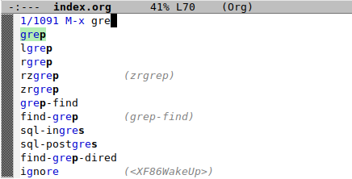
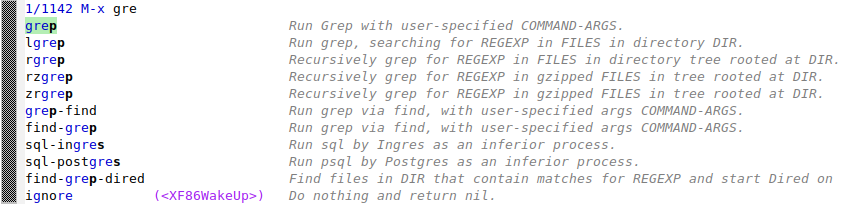
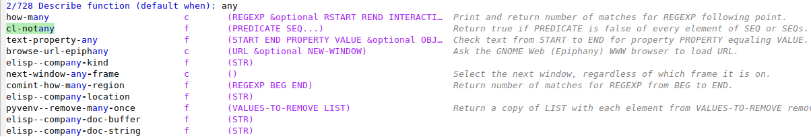

In one of my
first articles about getting
set up with packages.el, I left a somewhat
expensive line hanging out in the open:
;; init.el
;; --snip--
(package-refresh-contents)
;; --snip--
This function will call out to any repositories we've configured to search
packages from and update our local registry of what's available. That can take
a few seconds, and is a bit annoying if you're constantly restarting Emacs to
work on your init.el like I am right now. So it
would be nice if this function instead looked something like this:
(when <packages-aren't-installed>
(package-refresh-contents))
We just need a little code to check when
<packages-aren't-installed>
is true. We already discovered that the variable
package-selected-packages, managed by
custom.el, is a list of packages that we've
chosen to install. We also know that the function
package-installed-p checkes whether a particular
package is installed or not. In my init.el, I
have a block like so:
;; init.el
;; --snip--
(custom-set-variables
'(package-selected-packages '(markdown-mode marginalia)))
;; --snip--
So it seems like we have the ingredients we need, save for a way to apply the
package-installed-p over the whole list
package-selected-packages, and reduce down to a
single true or false value, depending on if any of the expected packages
aren't installed. Altogether, that means we have a very simple map-reduce
problem, and I am certain there's a function in Emacs ready for us to
use - we just need to find it.
This hidden superpower of Emacs 28.1+, along with the
marginalia package described below, are the main
tools in my arsenal for surfacing everything from Emacs' many hidden,
labyrinthine depths.
;; Set 'flex' to be the main completion style. This enables a "fuzzy"
;; style of searching for things using the minibuffer
(setq completion-styles '(flex basic partial-completion emacs22))
;; Turn on FIDO (Fake IDO) mode
(fido-mode)
;; Have TAB complete using the first option and continue, instead of
;; popping up the *Completions* buffer
(define-key icomplete-minibuffer-map [remap minibuffer-complete] 'icomplete-force-complete)
;; Sometimes I have to customize this icomplete-compute-delay variable
;; to 0.0 to avoid delay before the M-x minibuffer pops up
(setq icomplete-compute-delay 0.0)
;; Set the display to be a vertical list of items, instead of a horizontal one
(fido-vertical-mode)
This sets up the minibuffer to show a live update of completion candidates as we type, in an easy-to-read vertical format

While not a part of base Emacs, this little package complements the vertical
FIDO display by adding information, usually a docstring, next to each item.
After performing a
M-x package-refresh-contents and
M-x package-install RET marginalia, we get this:

The modifications we just made also affect commands that search through
variables and functions, like
C-h f (describe-function). What we're after
right now is some kind of function that acts on a list, and tells us if any of
the items are nil after applying the
package-installed-p function to them. My gut
tells me that a word like "all", "every", or "none" might appear in such a
function. After trying a few of these, examining the descriptions, and quickly
trying again, a query for the word "any" brought up a promising function
called cl-notany

It's close; this one will yield t when
every element in the sequence is nil,
we want one for when any element is
nil. Hitting
RET on
cl-notany above brings up its help text
cl-notany is an autoloaded compiled Lisp function in ‘cl-extra.el’.
(cl-notany PREDICATE SEQ...)
Return true if PREDICATE is false of every element of SEQ or SEQs.
[back]
There's a link on `cl-extra` in this buffer, and my bet is that the function
we're looking for would be defined near
cl-notany. Following that link takes us to a
block of code with the defun for
cl-notany. Lo and behold, there's a
cl-notevery right below it with a description
that matches exactly what we need:
;; cl-extra.el
;;;###autoload
(defun cl-notany (cl-pred cl-seq &rest cl-rest)
"Return true if PREDICATE is false of every element of SEQ or SEQs.
\n(fn PREDICATE SEQ...)"
(not (apply #'cl-some cl-pred cl-seq cl-rest)))
;;;###autoload
(defun cl-notevery (cl-pred cl-seq &rest cl-rest)
"Return true if PREDICATE is false of some element of SEQ or SEQs.
\n(fn PREDICATE SEQ...)"
(not (apply #'cl-every cl-pred cl-seq cl-rest)))
when block
With cl-notevery in hand, the last step is to
apply it in our init.el for managing package
refresh and installation.
(when (cl-notevery 'package-installed-p package-selected-packages)
(add-to-list 'package-archives '("melpa" . "https://melpa.org/packages/") t)
(package-refresh-contents)
(package-install-selected-packages))